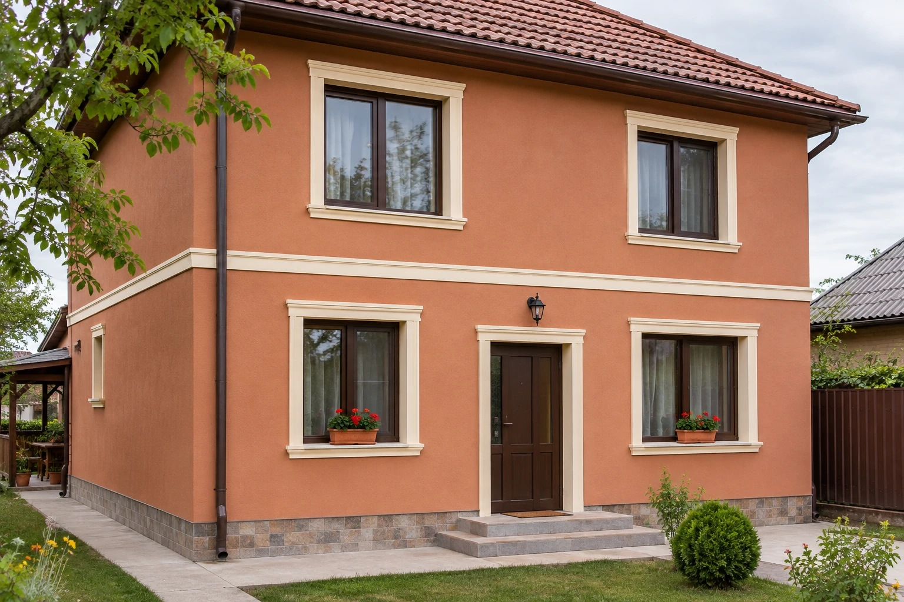
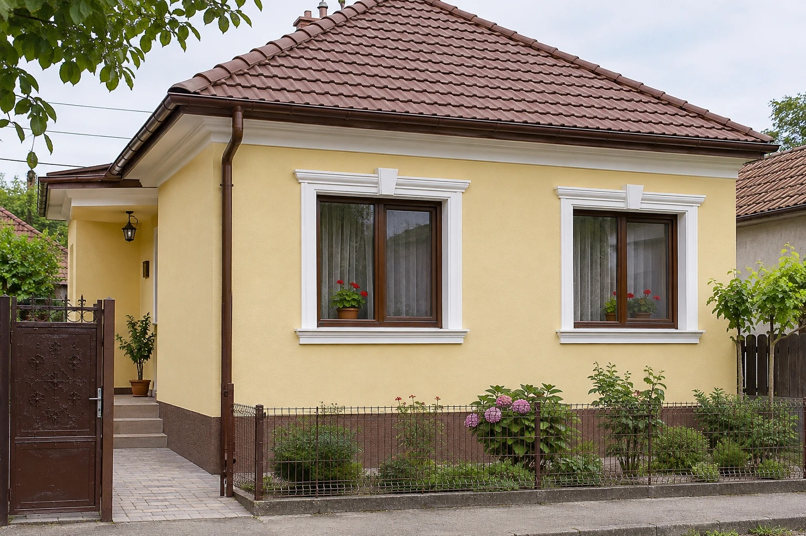
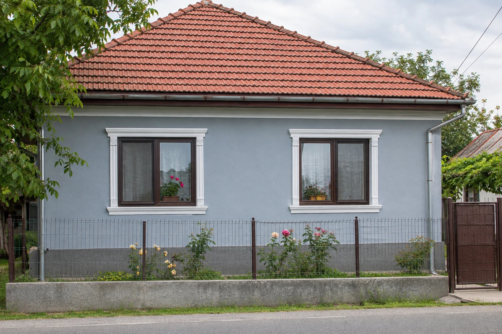

ancadramente ferestreancadrament ușăbrâu decorativ între etajesolbancurisoclu placat
Potrivit pentru: campanii ancadramente, brâuri exterior, Înainte/După (după), landing fațade
ancadramente ferestre gricornișă porticpilaștri / coloane pătratesolbancurisoclu gri
Potrivit pentru: creative premium (paletă 2027 crem/negru), pilaștri și cornișe, landing hero
colțare decorative (bosaje) la colțuriancadramente ferestresolbancurisoclu maro
Potrivit pentru: colțare NCL (ex. NCL107, NCL113), ancadramente, Problema/Soluția colțuri plate
ancadramente cu cheie de boltăcornișă sub streașinăsolbancurisoclu maro
Potrivit pentru: chei de boltă, ancadramente clasice, renovare casă bătrânească, cornișe exterior
ancadramente cu pilaștri decorativicornișă sub streașinăsolbancurisoclu gri
Potrivit pentru: renovare casă la țară, ancadramente decorative, campanii cu prețuri accesibile